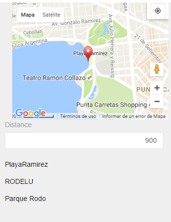
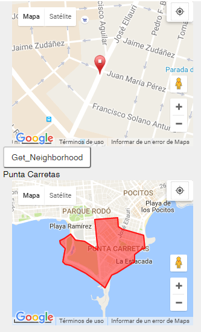
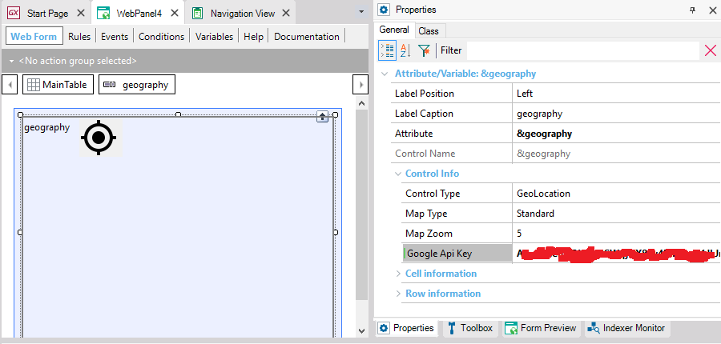

You can formally represent geographical entities with the Geography data type. This implies that at the database level, geographical information is stored using specific data types supported by different database management systems.
From the Geography data type, the types GeoPoint, GeoLine, and GeoPolygon are derived. These are specialized variants of the Geography data type.
|
Suppose you must store tourist attractions of a city, so you define the following Transaction object: PlaceID* PlaceName --> Character PlaceGeo --> Geography You then define a Web panel which, given any point and a distance in meters, returns all tourist attractions located within that radius from the point.
&MyPoint --> Geography
for each
where PlaceGeo.Distance(&MyPoint) < &Distance
load
endfor
|
 |
|
You have defined a Transaction to store the different neighborhoods in the city as follows: NeighborhoodId* NeighborhoodName --> Character NeighborhoodPlace --> Geography You then define a Web Panel object which, given a specific tourist attraction, returns the neighborhood or zone where that attraction is located:
For each
Where NeighborhoodPlace.Intersect(&Mypoint)
&NeighborhoodPlace = NeighborhoodPlace
endfor
//&NeighborhoodPlace is of type Geography and is shown in the form |
 |
Run the Transaction object and double click
FromString and FromGeoJson are two different methods that load data to the attribute. FromString receives a string in WKT format to load the positions, while FromGeoJson receives a file, in a GeoJSON format.
Notice that both format, receive any coordinate in Longitude and Latitude order, it means for example POINT(Longitude Latitude)
New
PlaceId = 1
PlaceName = "Palacio Legislativo"
PlaceGeo = GeoPoint.New(-34.8910275746741, -56.18720064473088)
endNew
New
PlaceId = 2
PlaceName = "Golf Club"
PlaceGeo.FromWkt("POINT(-56.163740158081055 -34.92478600243492)")
endNew
New
PlaceId = 3
PlaceName = "Ramirez Beach"
PlaceGeo.FromGeoJson('{"type":"Point","coordinates":[-56.1701774597168,-34.91676309400329]}')
endnew
New PlaceId = 4
PlaceName = "Bulevar Artigas, Boulevard"
PlaceGeo.FromString("LINESTRING(-56.16090774536133 -34.928797162523516, -56.1650276184082 -34.89494244739731)")
endnew
New PlaceId = 5
PlaceName = "Constituyente, Avenue"
PlaceGeo.FromGeoJson('{ "type": "LineString", "coordinates": [ [ -56.18528366088867, -34.90571271703311 ], [ -56.17850303649902, -34.90641660705113 ], [ -56.15318298339844, -34.9140182347531 ], [ -56.14863395690918, -34.91521472314688 ] ] }')
endnew
new
PlaceId = 6
PlaceName = "Cerro, Neighborhood"
PlaceGeo.FromString('POLYGON ((-56.248367 -34.873821, -56.266563 -34.876427, -56.263733 -34.890366, -56.268799 -34.893394, -56.26897 -34.900291, -56.264851 -34.902615, -56.253605 -34.895645, -56.247597 -34.895153, -56.246052 -34.889523, -56.248367 -34.873821, -56.248367 -34.873821))')
endnew
new
PlaceId = 7
PlaceName = "Punta Carretas, Neighborhood"
&geojsonbarrio = '{ "type": "Polygon", "coordinates": [ [ [-56.148808,-34.918453], ['
&geojsonbarrio = &geojsonbarrio + '-56.154835,-34.917061' + '], ['
&geojsonbarrio = &geojsonbarrio + '-56.156059,-34.916466' + '], ['
&geojsonbarrio = &geojsonbarrio + '-56.156250,-34.914318' + '], ['
&geojsonbarrio = &geojsonbarrio + '-56.162754,-34.914791' + '], ['
&geojsonbarrio = &geojsonbarrio + '-56.162003,-34.921761' + '], ['
&geojsonbarrio = &geojsonbarrio + '-56.165714,-34.919930' + '], ['
&geojsonbarrio = &geojsonbarrio + '-56.165737,-34.919930' + '], ['
&geojsonbarrio = &geojsonbarrio + '-56.168247,-34.919525' + '], ['
&geojsonbarrio = &geojsonbarrio + '-56.169598,-34.918205' + '], ['
&geojsonbarrio = &geojsonbarrio + '-56.171421,-34.919209' + '], ['
&geojsonbarrio = &geojsonbarrio + '-56.172668,-34.919685' + '], ['
&geojsonbarrio = &geojsonbarrio + '-56.172558,-34.920406' + '], ['
&geojsonbarrio = &geojsonbarrio + '-56.171207,-34.921566' + '], ['
&geojsonbarrio = &geojsonbarrio + '-56.171852,-34.924698' + '], ['
&geojsonbarrio = &geojsonbarrio + '-56.171249,-34.925278' + '], ['
&geojsonbarrio = &geojsonbarrio + '-56.169662,-34.925438' + '], ['
&geojsonbarrio = &geojsonbarrio + '-56.165329,-34.927372' + '], ['
&geojsonbarrio = &geojsonbarrio + '-56.161766,-34.929379' + '], ['
&geojsonbarrio = &geojsonbarrio + '-56.159920,-34.930645' + '], ['
&geojsonbarrio = &geojsonbarrio + '-56.157967,-34.927776' + '], ['
&geojsonbarrio = &geojsonbarrio + '-56.156445,-34.927177' + '], ['
&geojsonbarrio = &geojsonbarrio + '-56.153141,-34.925507' + '], ['
&geojsonbarrio = &geojsonbarrio + '-56.151508,-34.924644' + '], ['
&geojsonbarrio = &geojsonbarrio + '-56.151489,-34.923008' + '], ['
&geojsonbarrio = &geojsonbarrio + '-56.149151,-34.921497' + '], ['
&geojsonbarrio = &geojsonbarrio + '-56.148506,-34.921585' + '], ['
&geojsonbarrio = &geojsonbarrio + '-56.148808,-34.918453' + '] ] ] }'
PlaceGeo.FromGeoJson(&geojsonbarrio)
endnew
To see a variable or geographical attribute in the form only one provider is used: GoogleMaps. For this, you must configure an API Key.
In the case of Android apps, you must configure the Android Maps API Key property
In the case of Web panels, you must configure the API Key for each control in the form as follows:

To obtain an API Key for Javascript, click here
In order to work properly, it highly probably should enable more than one API, for this Key: For Example.: Maps Javascript API, Maps static API, Geocoding API, Geolocation API are common uses
SQL Server : Version 2008 or higher is required.
In case of SQL Server 2014 or higher, the SQL Server 2012 Feature pack must be installed on the webserver.
MySQL/MariaDB: Version 5.7.5 or higher.
Version 8.0 is not supported, yet
Oracle: Oracle Locator or Oracle Spatial installed. For Oracle 11.g or higher, it’s already installed by default.
PostgreSQL: It’s necessary to install the extension PosGis from PostgreSQL itself. At the moment of database creation, you must set the value “postgis” in the property “Postgre SQL Extensions” (before executing the reorganization).
DBMS: In Genexus 15, in DB2 and Informix this functionality is not supported.
In previous versions, to represent geographical information some functionalities that will still be available were used, such as:
- Geolocation Domain
- External object SDGeolocation
- User control: MapControl (Web)
- Control Grid Property: Maps
| Geography | ||
| Srid | int | Spatial Reference System Identifier (SRID), identifies de reference system for the represented Geographic object. See https://en.wikipedia.org/wiki/SRID |
| FeatureType | char | String with the type name of the represented Geographic object. Some supported types are POINT, LINE, POLYGON, other supported types can be added in future releases. The empty string represents the null or unsupported object. |
| GeoPoint | ||
| Srid | int | Spatial Reference System Identifier (SRID), identifies de reference system for the represented Geographic object. See https://en.wikipedia.org/wiki/SRID |
| Longitude | int(12,8) | Value of the Longitude (horizontal) coordinate for the point |
| Latitude | int(12.8) | Value of the Latitude (vertical) coordinate for the point |
| GeoLine | ||
| Srid | int | Spatial Reference System Identifier (SRID), identifies de reference system for the represented Geographic object. See https://en.wikipedia.org/wiki/SRID |
| GeoPolygon | ||
| Srid | int | Spatial Reference System Identifier (SRID), identifies de reference system for the represented Geographic object. See https://en.wikipedia.org/wiki/SRID |
| Geography | ||
| FromWkt (char WKTtext) | Geography | Loads a Geography object represented by the WKT text (https://en.wikipedia.org/wiki/Well-known_text) |
| FromString(char String) | Geography | Alias for FromWKT Method |
| FromGeoJson(Char String) | Geography | Loads a Geography object represented by the GeoJSON text (GeoJSon format spec http://geojson.org/geojson-spec.html) |
| ToGeoJson() | char | Serializes the object to GeoJSON representation. |
| ToWkt() | char | Serializes the object to WKT (Well Known Text) Format |
| Distance(Geography object) | int | Calculates the distance (in meters ) between the current object and the parameter ( both Geography objects must be GeoPoints or Geography containing a GeoPoint) |
| Intersect(Geography object)) | boolean | Returns true if the Geographic object parameter Intersects or is included in the instance object. |
| ToGeoPoint(Geography object) | GeoPoint | Converts the Geography to a GeoPoint type (cast) |
| ToGeoLine(Geography object) | GeoLine | Converts the Geography to a GeoLine type (cast) |
| ToGeoPolygon(Geography object) | GeoPolygon | Converts the Geography to a GeoPolygon type (cast) |
| GeoPoint | ||
| FromWkt() ...Intersect(GeoPoint) | All the methods for Geography apply | |
| ToGeography(GeoPoint object) | Geography | Converts the Point to a Geography type (cast) |
| GeoLine | ||
| FromWkt() ...Intersect(GeoLine) | All the methods for Geography apply, except Distance. | |
| ToGeography(GeoLine object) | Geography | Converts the GeoLine to a Geography type (cast) |
| GeoPolygon | ||
| FromWkt() ...Intersect(GeoPolygon) | ||
| ToGeography(GeoPolygon object) | Geography | Converts the GeoPolygon to a Geography type (cast) |
There is also a static version of these methods.
Note: ToString and FromString Methods are enabled, in Geography datatype, just for compatibility reasons. ToWkt and FromWkt have the same behavior and are recommended to use.
DBMSs: SQL Server, Oracle, MySQL, SAP Hana, and PostgreSQL.
Generators: .NET, .NET Core, Java, Android, Apple
Map Control Maps Control Type Geolocation domain